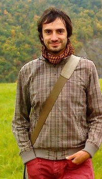
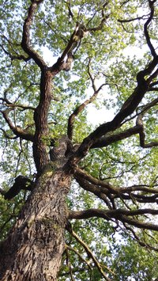
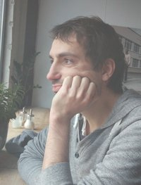

Vítejte! Jmenuji se Matouš Borák a vždy jeden den v týdnu pracuji jako
psychoterapeut v Praze, kde mám od roku 2012 svou malou soukromou praxi.
Procházíte-li obtížnějším obdobím nebo pokud chcete něco ve svém životě změnit,
buďte srdečně vítáni a prosím, čtěte dále.
Co nabízím
Nabízím vám možnost pravidelných terapeutických sezení, při kterých budeme společně pracovat na tom, co vás tíží.
Můžeme se zabývat nějakým aktuálním problémem, např. pokud vás čeká obtížné rozhodnutí,
procházíte náročným životním obdobím, zažíváte přemíru stresu v práci či doma.
Nebo se můžeme hlouběji věnovat rozvoji osobnosti, překonání opakujících se vztahových problémů či tomu,
že se prostě cítíte dlouhodobě neštastně, nespokojeně a jakoby unaveni životem.
Všechna tato témata se ale samozřejmě různě prolínají, konkrétní forma a průběh terapie se vždy
odvíjí od vašich potřeb a vzájemné domluvy.
Ve své praxi pracuji individuálně s dospělými klienty, případně s dospívajícími.
Při práci rád využívám technik a postupů Gestalt terapie,
neberu je však jako dogma.
Více o mně
Je mi 43 let. V roce 2013 jsem dokončil prezenční část pětiletého
psychoterapeutického výcviku IVGT v Gestalt terapii.
Výcvik jsem pak v r. 2019 završil závěrečnou prací a zkouškou.
Postgraduální dvouletý vývik Gestalt Plus skončil v r. 2022.
Mám za sebou zhruba čtyři roky skupinové i individuální terapie a
přes 150 hodin supervize u různých zkušenějších kolegů.
Po dva roky jsem byl dobrovolníkem v projektu Dobroduš, pečujícím o klienty s duševním onemocněním.
V roce 2013 jsem také dokončil
bakalářské studium psychologie na olomoucké univerzitě.
Práci s lidmi se dnes obvykle věnuji 1-2 dny v týdnu, zbytek času pracuji
na volné noze jako „ajťák“
(což odráží mé dřívější vzdělání v přírodních vědách).
Kromě obecné terapeutické práce se se zájmem věnuji tomu,
jak se lidé vyrovnávají s rostoucími nároky moderní doby
a střetu běžných lidských zájmů s moderními technologiemi.
Nejen při své práci pevně věřím v přirozenou potřebu a schopnost každého člověka růst a uzdravovat se.
Ještě jednou stručně v bodech a s odkazy…
- narozen r. 1976
- jsem podruhé ženatý, s nynější manželkou se staráme o dvě děti
vzdělání
- tříletý postgraduální výcvik Gestalt Plus (2019 - 2022)
- systematický pětiletý psychoterapeutický výcvik IVGT v Gestalt terapii (od r. 2008, prezenční část dokončena 2013, závěrečná zkouška v r. 2019)
- bakalářské studium psychologie na Univerzitě Palackého v Olomouci (dokončeno 2013)
- dříve magisterské a doktorské studium fyziky - meteorologie na MFF UK v Praze, titul RNDr. (1995-2004)
další sebezkušenostní aktivity
- osobní terapie – celkem necelých 100 hodin individuální terapie (2003, 2010-11) a 200 hodin skupinové terapie (v rámci výcviku, 2008-2010) v pozici klienta
- přes 150 hodin odborné supervize vedené zkušenějšími kolegy
- „Gestalt terapie doslova“ – výborná dvouletá skupina plná praktických experimentů i teorie vedená Marianem Chrastou (2005-2007)
- celkem tři několikatýdenní semináře ze skvělé sebepoznávací arteterapeutické dílny Kamily Ženaté
praxe
- soukromá terapeutická praxe (od r. 2012)
- dobrovolník v projektu Dobroduš – pravidelné každotýdenní setkávání s klientem s duševním onemocněním (2010-2012)
- po tři roky jsem vždy přes letní prázdniny měl možnost předcvičovat základy jógy pacientům na psychiatrickém oddělení ÚVN Praha (2008-2010)

O Gestalt terapii

Gestalt terapie (GT) se vyvíjí od 40. let minulého století
a filozoficky se inspiruje ze spousty zdrojů od fenomenologie,
přes existencialismus až po východní náboženství.
Spíše než cizí slova vás ale asi zajímá, jak se to projevuje v praxi.
Pokusím se to uvést na několika základních principech GT, které mi vyhovují a jež v praxi využívám:
-
podpora uvědomování – co si neuvědomuji, to mohu jen těžko ovlivnit
(ale naopak to může ovlivňovat mé prožívání), a proto se v terapii snažíme
jemným způsobem prohlubovat uvědomění, jak to jen jde → cílem je podpořit
schopnost rozhodovat sám za sebe, smysluplně a ke své spokojenosti
-
důraz na tady a teď – vzpomínky i fantazie mohou být klamné,
přítomný prožitek je naproti tomu vždy pravdivý, proto jej oceňujeme,
podporujeme a zkoumáme → cílem je uklidnění v prožívání přirozeného proudu života
-
úcta – přesvědčení o tom, že člověk vždy jedná tak,
jak aktuálně nejlépe dovede → v terapii nehledáme vinu ani patologie
-
holismus – vše má v terapii své místo: naše tělo, emoce,
myšlenky i spiritualita → nepředpokládáme, že jeden úhel pohledu je apriori důležitější než jiný
Více o principech Gestalt terapie najdete např. na stránkách IVGT.
Kdy, kde a za kolik
Terapeutická sezení probíhají vždy ve středy odpoledne od cca 14 do 19 hodin a trvají 60 minut.
Scházíme se v útulné místnosti v terapeutickém centru Mařákova 4, je to poblíž metra Hradčanská (viz mapa), zvoňte prosím přímo na „Pracovna 2“ (případně na „Terapeutické centrum“) a vystoupejte do druhého patra.
Cena za jedno sezení je 1000,- Kč, s výjimkou úvodního sezení,
které je zdarma. Po domluvě poskytuji případnou slevu lidem ve finanční nouzi.
Nemám smluvní vztah s pojišťovnami a terapii jimi hrazenou neposkytuji.
Platit je možné hotově po jednotlivých sezeních nebo jinak dle domluvy.

Jak to probíhá
Během úvodního sezení se domluvíme na tom, jak celé naše setkávání bude obecně vypadat.
Zkusíme se dohodnout na tzv. "zakázce", tj. na hlavním tématu, kterému se budeme věnovat.
Nejde ale o žádné dogma, kterého bychom se museli násilím držet, zakázka nám bude sloužit
spíše jako nenápadné vodítko v pozadí aktuálních témat a pomůcka pro sledování pokroků v naší práci.
Je možné ji také v průběhu terapie měnit podle potřeby.
Domluvíme také frekvenci setkání (většinou jednou týdně), rámcově také délku terapie
a seznámím vás s několika jednoduchými pravidly spolupráce:
Pravidla spolupráce…
-
Vše, co je na sezeních vysloveno, zůstává přísně důvěrné,
to znamená, že podrobnosti z nich ani vaši totožnost
nebudu nikomu sdělovat, a to ani po skončení terapie.
-
Výjimkou jsou odborné supervize, na kterých mohu průběh terapie konzultovat,
abych s vámi mohl pracovat co nejlépe (mí supervizoři jsou vázáni stejnými
etickými zásadami a pravidlem mlčenlivosti jako já).
-
Ze sezení si občas pořizuji krátké poznámky,
ty ale nebudou označeny vaším jménem a budou bezpečně uchovány.
-
Pokud budete potřebovat odvolat dohodnuté sezení, žádám vás,
abyste mi dal/a vědět nejpozději 24 hodin předem, jinak budete muset cenu uhradit.
Pokud ve výjimečném případě opožděně odvolám sezení já (nemoc, apod.),
máte příští sezení zdarma.
-
Přestože zatím nejsem členem Evropské asociace pro Gestalt terapii (EAGT),
při práci dobrovolně dodržuji její etický kodex. Jeho celé znění vám
rád poskytnu na požádání nebo jej najdete na stránkách IVGT.
-
Pokud budete mít pocit, že z mé strany došlo k závažnějšímu profesnímu pochybení
(např. etickému), můžete se kdykoliv obrátit se stížností na výcvikový institut IVGT,
který na mou práci dohlíží, nejlépe přímo na některého
ze seniorních trenérů.
Co se týká ukončení terapie, o tom vždy rozhodujete především vy,
nicméně doporučuji, abychom naše setkávání ukončili po předešlé vzájemné dohodě,
abychom měli dostatek času je společně uzavřít a nezůstaly nevyjasněné otázky.
Těším se na společná setkání!